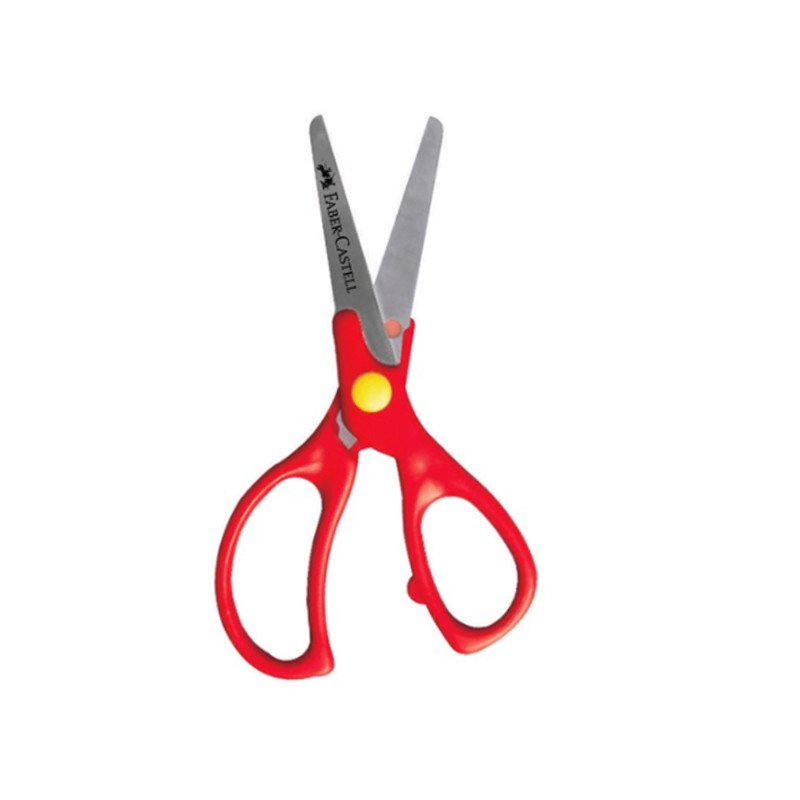

By DANNY Y LISANDRO
Los operadores mecánicos convierten la fuerza y el movimiento. El conjunto de varios operadores se denomina mecanismo. Una máquina es un conjunto de varios mecanismos interrelacionados. Estos operadores sirven para transmitir el movimiento desde el lugar en que se produce hasta la pieza que se desea mover. Se caracterizan por presentar elementos o piezas sólidos, con el objeto de realizar movimientos por acción o efecto de una fuerza.

Son aquellas que realizan su trabajo en un solo paso. Ejemplo: cuchillo, polea, rodillo, hacha, tijeras, machete, martillo, etc.
Son máquinas que están conformadas por dos o más maquinas simples. Cuando no es posible resolver un problema técnico en una sola etapa hay que recurrir al empleo de una máquina compuesta. Estas máquinas son, en realidad, una sabia combinación de diversas máquinas simples, de forma que la salida de cada una de ellas se aplica directamente a la entrada de la siguiente hasta conseguir cubrir todas las etapas necesarias, o el efecto deseado. La práctica totalidad de las máquinas empleadas en la actualidad son compuestas, y ejemplos de ellas pueden ser: polipasto, motor explosión interna (diesel o gasolina), impresora de ordenador, bicicleta, cerradura, candado, video, etc.).
- Palanca
- Plano inclinado
- Cuña
- Rueda
- Mecanismo de manivela
- Polea
- Tuerca husillo
El punto de apoyo se encuentra entre la resistencia y la potencia.
Ejemplos
- Martillo sacando un clavo
- Tijeras
- Balancín
- Balanzas (de dos platos y romana)
- Alicates
- Freno de la bicicleta: las manetas y la mayoría de los frenos
- La pala, cuando saca la palada de la tierra funciona como palanca de primer genero (punto de apoyo en el medio).
El punto de apoyo se encuentra en un extremo, la potencia en el extremo opuesto y la resistencia entre ambas.
Ejemplos
- Los frenos de bicicleta en V
- Cascanueces
- Guillotina para papel
- Bomba manual para sacar agua
- Gatillo de los extintores
- Abridor de botellas
- Algunos pedales

El punto de apoyo está en un extremo, la resistencia está en el extremo opuesto y es la potencia la que se sitúa en medio.
Ejemplos
- Caña de pescar
- Pinza de cejas
- En el cuerpo humano, el conjunto codo - bíceps braquial - antebrazo, y la articulación temporomandibular.